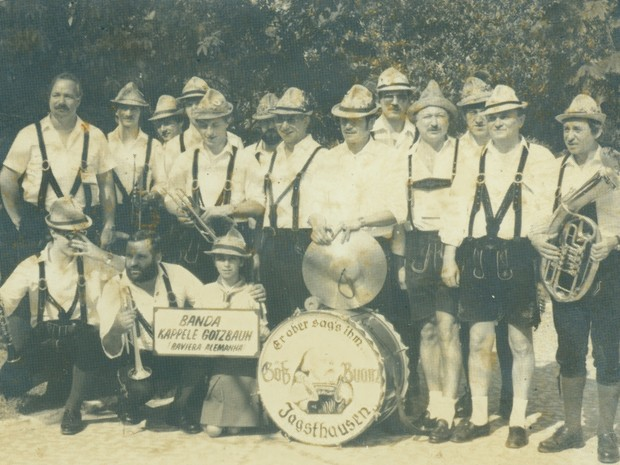
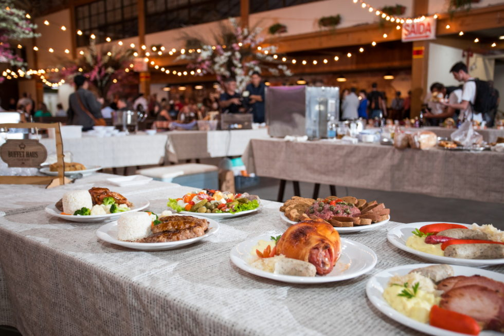
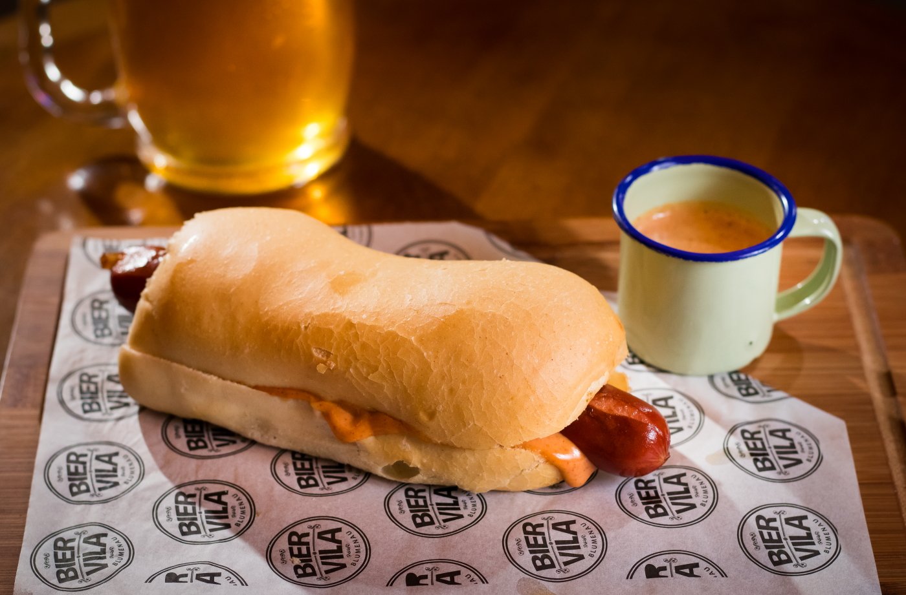
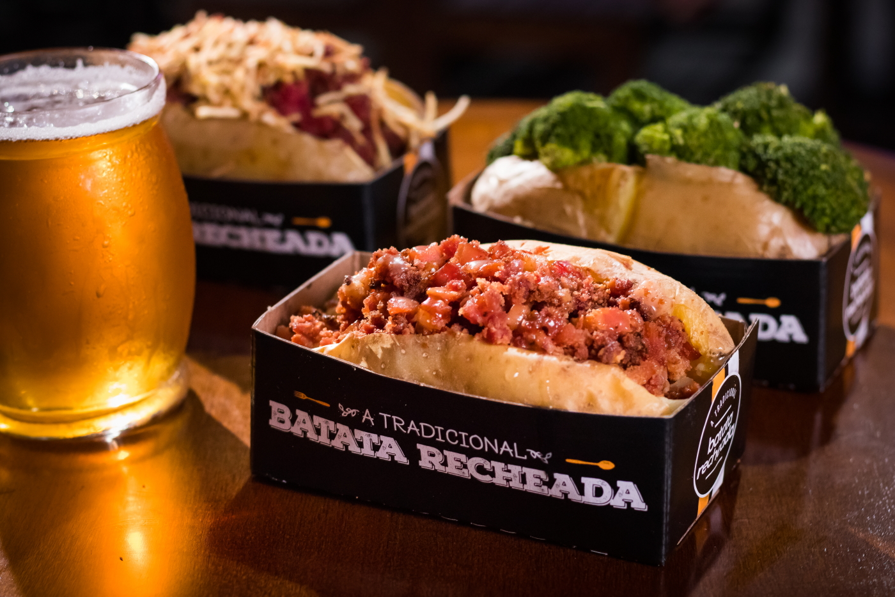

Datas

Redes Sociais
História
Blumenau, colonizada por alemães, sempre manteve viva a cultura e as tradições de seus antepassados. No início da década de 80, empresários e representantes de entidades de classe e o poder público da cidade se uniram e idealizaram um evento onde esta cultura pudesse ser celebrada e mostrada ao mundo. Inspirada naturalmente pela homônima alemã nasceu então, em 1984, a Oktoberfest Blumenau. Naquele primeiro ano, em apenas 10 dias de festa, mais de 100mil pessoas visitaram o evento.
Na década de 90 e início dos anos 2000 a festa consolidou-se como um dos maiores eventos turísticos do Brasil e uma das maiores Oktoberfests do mundo. A tradição nunca foi deixada de lado, mas nessa época a protagonista do evento era a cerveja.
Agora, a festa acompanhou as tendências tecnológicas, modernizou-se em vários aspectos e, principalmente, retornou a festejar igualmente todos os elementos da cultura germânica local! A cada ano, mais de 500 mil pessoas visitam a Oktoberfest Blumenau e experenciam o amor pelas tradições, música, dança, trajes típicos e gastronomia típica. Tudo isso com muita alegria e, claro, um bom chope. Prosit!
Trajes

Se você pretende ir à Oktoberfest festejar com a galera, a primeira coisa que você deve pensar é no conforto, afinal, você terá muitas horas para curtir e se divertir e se não estiver confortável o bastante sua diversão ficará comprometida.
Pratos
Wurst Dog
cachorro-quente, aqui em Blumenau temos o Wurst Dog, feito com salsicha especial e molhos artesanais.
Batata Recheada
Batata Recheada